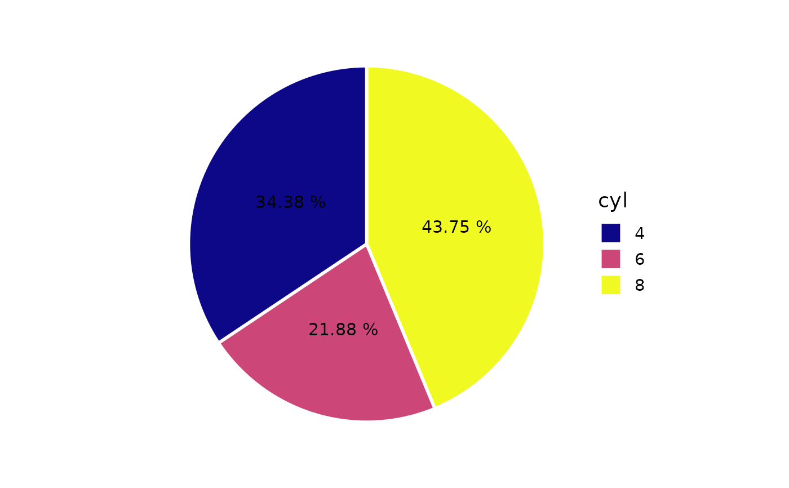

Easily generate pie charts, AKA bar charts with polar coordinates, using ggplot2 with a simplified customization interface for common modifications. Pie charts are rarely the most effective way of visualizing data (especially when >5 groups are being compared), but that doesn't mean there shouldn't be an easy way to build one with ggplot2 in case your project stakeholders ask. See this blog post for an introduction to ggplot2.
plot_pie(
data,
fill_var,
y = NULL,
...,
title = NULL,
title_hjust = 0.5,
caption = NULL,
caption_hjust = 0,
fill_var_order_by_y = NULL,
fill_var_order = NULL,
fill_var_labs = NULL,
fill_var_values = NULL,
palette = c("plasma", "C", "magma", "A", "inferno", "B", "viridis", "D", "cividis",
"E"),
palette_direction = c("d2l", "l2d"),
palette_begin = 0,
palette_end = 1,
fill_var_title = NULL,
slice_text = NULL,
slice_text_prefix = "",
slice_text_suffix = "",
slice_text_colour = "black",
slice_text_size = 4,
slice_text_custom = NULL,
line_size = 1,
round_n = NULL,
lump_n = NULL,
lump_lab = NULL,
facet_var = NULL,
facet_var_order = NULL,
facet_var_labs = NULL,
facet_var_strip_position = c("top", "bottom"),
facet_var_text_bold = TRUE,
greyscale = FALSE,
text_size = 14,
font = c("sans", "serif", "mono"),
legend_position = c("right", "left", "bottom", "top"),
omit_legend = FALSE,
aesthetic_options = FALSE
)A data frame or tibble containing at least one categorical variable.
A categorical variable to assign to the slice fill colour
(quoted or unquoted), e.g. fill_var = "grouping_variable" or fill_var =
grouping_variable. Produces separate slices each level of the fill
variable. See aes for details.
A numeric variable containing values to be used for calculating pie slice sizes. If y is not specified, then pie slice sizes will be based on the relative frequency of fill_var categories. If y is specified, then the slices will represent fractions of the sum of the y-variable under each category of fill_var.
graphical parameters (not associated with variables) to be passed
to geom_bar, e.g. colour (affects slice outlines),
to be applied to all slices. To see some of the available options in a web
browser, set the aesthetic_options argument to TRUE.
Add a main title to the plot using a character string, e.g. "pie chart title"
Left-to-right/horizontal justification (alignment) of the main plot title. Accepts values from 0 (far left) to 1 (far right). Default is 0.5 (centre).
Add a figure caption to the bottom of the plot using a character string.
Left-to-right/horizontal justification (alignment) of the caption. Accepts values from 0 (far left) to 1 (far right). Default is 0 (left).
This allows you to sort the slices of the chart in order of increasing/ascending ("i" or "a") or decreasing ("d") value of y. If no variable is assigned to y, then the sorting occurs based on the frequencies of the fill_var categories.
This allows you to manually modify the order of the
fill variable groups, e.g. fill_var = grouping_variable, fill_var_order =
c("group_2", "group_1"). See fct_relevel for
details.
This allows you to modify the labels of the fill
variable groups, e.g. fill_var = grouping_variable, fill_var_labs =
c("group_1_new_label" = "group_1_old_label", "group_2_new_label" =
"group_2_old_label"). See fct_recode for details.
This allows you to modify the colours assigned to the
fill of each of the fill variable groups, e.g. fill_var =
grouping_variable, fill_var_values = c("blue", "red"). See
scale_fill_manual for details. For the colour
options available in base R, see colour_options.
If a variable is assigned to fill_var, this determines which viridis colour palette to use. Options include "plasma" or "C" (default), "magma" or "A", "inferno" or "B", "viridis" or "D", and "cividis" or "E". See this link for examples. You can override these colour palettes with fill_var_values.
Choose "d2l" for dark to light (default) or "l2d" for light to dark.
Value between 0 and 1 that determines where along the
full range of the chosen colour palette's spectrum to begin sampling
colours. See scale_fill_viridis_d for details.
Value between 0 and 1 that determines where along the full
range of the chosen colour palette's spectrum to end sampling colours. See
scale_fill_viridis_d for details.
this allows you to modify the fill variable label in the plot legend.
Adds text with slice percentages ("pct"), total counts/values ("tot"), or fill_var group labels ("grp") to the middle of each slice.
Adds a prefix string to slice_text labels separated by a single space, e.g. if your slices represent monetary totals (via a y-variable), then you might set this to "$"
Adds a suffix string to slice_text labels separated by a single space, e.g. if your slices represent percentages (e.g. slice_text = "pct"), then you may want to set this to "%"
Controls slice text font colour. For the colour
options available in base R, see colour_options.
Controls the slice text font size.
Use this to specify custom slice text labels instead of using one of the convenience options provided by the slice_text argument. Must be a character vector of length equal to the number of slices (fill_var categories).
Controls the slice outline thickness if a colour is specified (e.g. colour = "black").
If slice_text = "pct" or "tot" this allows you to round the
values to n significant digits. See the round "n" argument
documentation for details.
If there are so many fill_var categories that you find the plot
difficult to interpret, you can use this to lump/combine the least common
categories together into an "other" category. Simply specify the number of
categories you want to retain and the rest will be lumped together. See
fct_lump_n for details. If "y" is specified, then
the relative proportions of the fill_var group totals for the y variable
will be used to determine which are the top n categories to retain (i.e.
largest slices).
If lump_n is used, this allows you to change the label of the "other" category.
Use if you want separate pie charts for each level of a
grouping variable (i.e. a faceted plot), e.g. facet_var =
"grouping_variable" or facet_var = grouping_variable. See
facet_wrap for details.
If a variable has been assigned for faceting using
facet_var, this allows you to modify the order of the variable groups, e.g.
facet_var = grouping_variable, facet_var_order = c("group_2", "group_1").
See fct_relevel for details.
If a variable has been assigned for faceting using
facet_var, this allows you to modify the labels of the variable groups
which will appear in the facet strips, e.g. facet_var = grouping_variable,
facet_var_labs = c("group_1_new_label" = "group_1_old_label",
"group_2_new_label" = "group_2_old_label"). See
fct_recode for details.
If a variable has been assigned for faceting using facet_var, this allows you to modify the position of the facet strip labels. Sensible options include "top" (the default) or "bottom".
If a variable has been assigned for faceting using facet_var, this allows you to use boldface (TRUE/default or FALSE) for the facet strip label text.
Set to TRUE if you want the plot converted to greyscale.
This controls the size of all plot text. Default = 14.
This controls the font of all plot text. Default = "sans" (Arial). Other options include "serif" (Times New Roman) and "mono" (Courier New).
This allows you to modify the legend position. Options include "right" (the default), "left", "top", & "bottom".
Set to TRUE if you want to remove/omit the legends.
If set to TRUE, opens a web browser to the tidyverse online aesthetic options vignette.
A ggplot pie chart.
Wickham, H. (2016). ggplot2: elegant graphics for data analysis. New York, N.Y.: Springer-Verlag.
plot_pie(mtcars,
fill_var = cyl,
slice_text = "pct",
slice_text_suffix = "%",
colour = "white",
round_n = 2)
